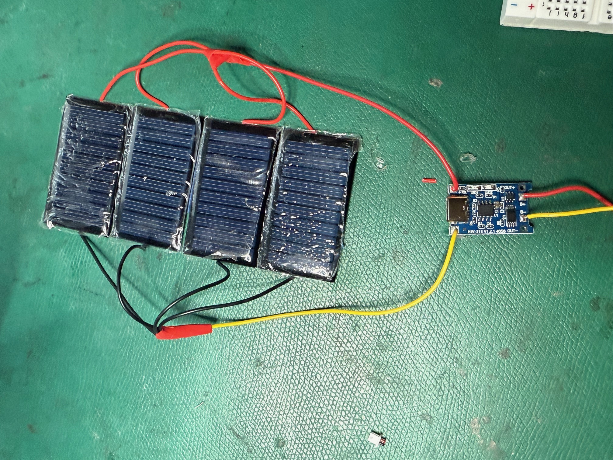
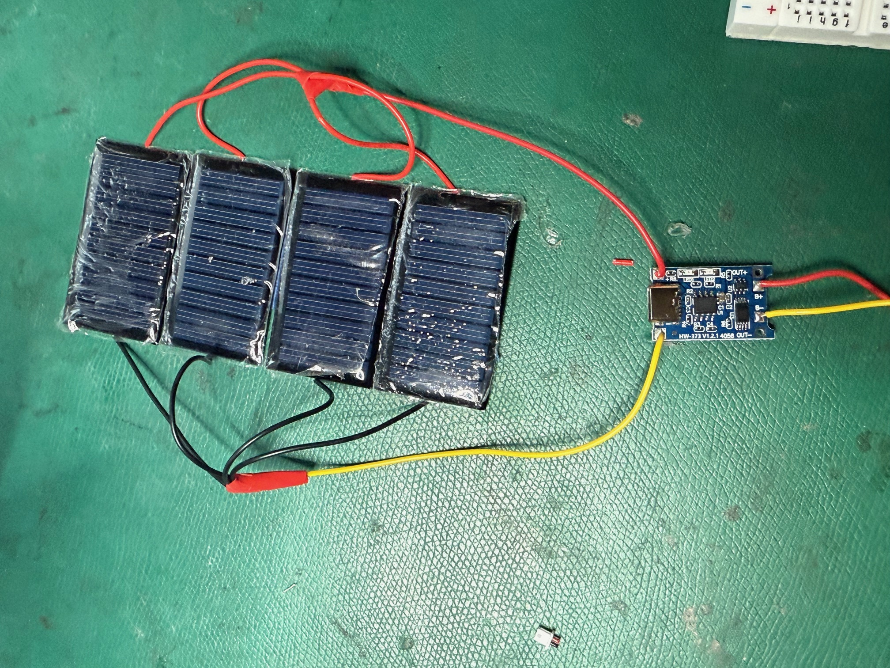

SunThread Development Journey: Week 1-15
Weeks 1-3: Research and Concept Development
The project began with extensive research into solarpunk aesthetics and sustainable fashion. I explored the intersection of wearable technology and environmental consciousness, studying existing projects in solar-powered clothing and bio-responsive materials. During this phase, I defined the core concept: a wearable garment that would literally glow in response to sunlight, creating a tangible connection between the wearer and renewable energy systems.

Weeks 4-5: Initial Component Sourcing and Testing
I began sourcing electronic components, starting with used solar panels that unfortunately proved non-functional despite troubleshooting efforts. This early setback taught me the importance of component reliability. I then ordered new mini solar panels, LEDs, and batteries, and began researching Arduino-based power management systems.
Weeks 6-7: Electronic System Design
With functional components in hand, I began testing solar panel configurations and LED systems on breadboards. The goal was to create a stable power generation and distribution system that could support multiple LED circuits while maintaining wearability. I experimented with different charging configurations and began prototyping the Arduino control system.

Weeks 8-9: System Integration Challenges
These weeks focused on refining the electronic architecture and addressing power consumption optimization. I designed the layout for integrating electronics into a wearable format, considering factors like component placement, wire routing, and user safety. The challenge was balancing functionality with the practical constraints of wearable design.
Week 10: Major Technical Setbacks
Week 10 presented significant challenges that reshaped the project timeline. Multiple component failures occurred, including defective charger modules and boost converters that required desoldering modifications. LED system testing revealed battery capacity limitations, requiring me to scale down to approximately 8 LEDs per circuit to prevent overheating.

 

However, solar panel performance exceeded expectations, leading me to expand the inventory to 45 panels total. I learned crucial lessons about prioritizing component quality over cost efficiency, particularly for charging systems where reliability is paramount.
Interim Period: Strategic Regrouping
The break between academic terms became a critical period for project recovery. This period was used for material sourcing, fabric compatibility testing, and securing access to proper fabrication equipment including soldering stations and industrial sewing machines.
Weeks 11-12: System Rebuild and EL Wire Transition
With quality replacement components, I rebuilt the electronic system from the ground up. A major design shift occurred during this phase: transitioning from LEDs to EL (electroluminescent) wire. This change simplified the power requirements and created a more organic, flowing light distribution throughout the garment. EL wire proved more suitable for wearable integration, offering flexibility and even illumination that better matched the solarpunk aesthetic vision.

Simultaneously, I began constructing the base garment, carefully planning the integration points for the EL wire system. The challenge was creating a seamless integration that maintained both functionality and aesthetic appeal while accommodating the different power requirements of the EL wire system.
Weeks 13-14: Integration, Material Innovation, and Refinement
Week 13 brought a breakthrough in material experimentation. I discovered that organza fabric allowed sunlight to pass through while concealing the solar panels from direct view. This translucent property enabled me to create an elegant solution: housing the solar panel system on the back of the wearable where it could collect energy efficiently while remaining aesthetically hidden from observers.
The organza layer became both functional and beautiful, maintaining the garment's visual appeal while ensuring optimal solar energy collection. I refined the solar panel placement strategy, implementing 8-10 panels per garment section based on optimal sun exposure areas, with the organza providing the perfect concealment solution.
Week 15: Final Assembly and Documentation
The final week involved completing all system integrations, conducting comprehensive testing of the responsive EL wire lighting features, and documenting the completed work through photography and video. The finished SunThread garment successfully demonstrated the core concept: a beautiful, functional wearable that glows in response to solar energy, embodying the solarpunk vision of harmony between technology and nature.
Key Lessons Learned
The development process taught valuable lessons about component selection, the importance of quality over cost efficiency, and the challenges of integrating complex electronics into wearable formats. The transition from LEDs to EL wire and the discovery of organza's unique properties were pivotal moments that elevated both the functionality and aesthetics of the final piece.
SunThread represents not just a functional garment, but a proof of concept for how sustainable technology can be seamlessly integrated into daily life, making renewable energy both beautiful and personally meaningful.